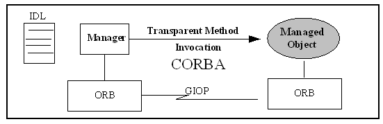
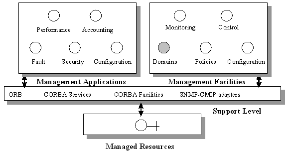
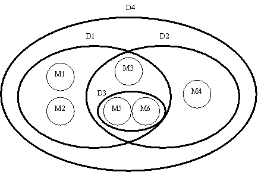
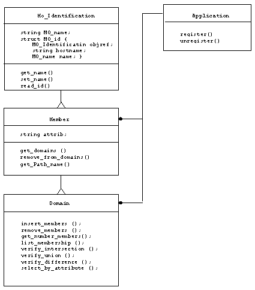
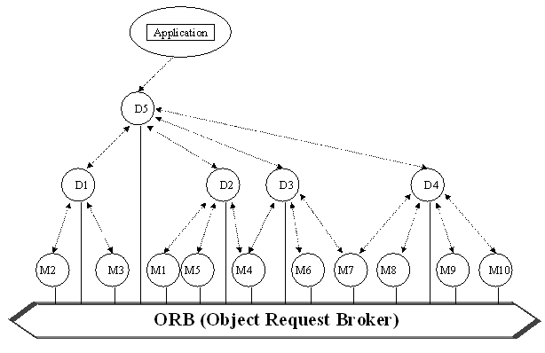
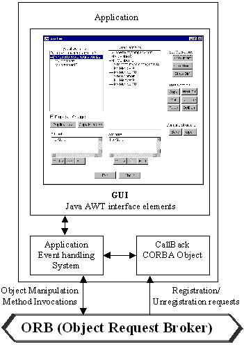
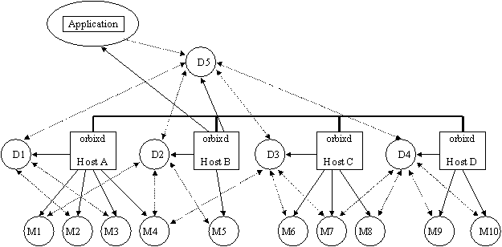

Distributed Object Domains for a CORBA Based Platform
Roberto Silveira Silva Filho, João Augusto G. de Queiroz,
Edmundo R. M. Madeira
IC –Institute of Computing
UNICAMP – University of Campinas
13081-970 Campinas - SP Brazil
{robsilfi, aqueiroz, edmundo}@dcc.unicamp.br
Abstract
This paper describes the analysis, the specification and main issues involved on a Domain Facility implementation. This facility is implemented in the Multiware Management Architecture context, a distributed and open management architecture based on CORBA. The motivation for this facility definition arises from the needs of structuring and partitioning managed resources, offering an extensible and integrated infrastructure for responsibility and authorization limits establishment amongst different managers, hiding the complexity and scale from the managed environment.
Key-Words: Distributed System Management, Domains, Distributed Objects, CORBA, RM-ODP, Multiware Platform.
1 Introduction

Figure 1: CORBA as a Management Environment.
The object-oriented paradigm has been a very useful tool for the distributed systems development. Besides its use in many other areas of software component development, which has been widely used and tested, it is a concept already used in many of the engineering areas. The idea of modeling distributed systems as a collection of interacting objects has been appropriated for integrating resources in heterogeneous and distributed environments. As objects can only intercommunicate using a well-defined interface, it offers a natural model to be used in open distributed systems, satisfying its requirements of interoperability and decoupleness. In this context, one way to assure the interoperability amongst distributed objects is the use of jury patterns as described in the ODP (Open Distributed Processing) Reference Model (ITU-T/ISO, 1995a) from the ISO (International Standards Organization) and ITU-T (International Telecommunications Union) and "de facto" as described in CORBA (Common Object Request Broker Architecture) (OMG 1997d) from the international consortium Object Management Group (OMG). This last standard is the kernel of "Multiware" Project, which is being developed by the Electrical Engineering Faculty and Institute of Computing at the University of Campinas (Loyola,1994).
The information model offered by CORBA IDL is comparable to GDMO (Guidelines for the Definition of Management Objects) in the OSI/CMIP model, being better than the SNMP for a MIB (Management Information base) definition, allowing a clear separation between interface declaration and its implementation. CORBA offers an object-oriented paradigm in the same way as OSI/CMIP and TMN models with a higher abstraction degree. In the same way that GDMO offers such separation characteristic, CORBA offers a simpler solution, it doesn’t requires the knowledge of abstract syntax and codification or decodification schemas by the developers. The IDL, a pure declarative language, is used to describe the CORBA object interfaces.
At the communication viewpoint, CORBA offers more transparency and a more elegant architecture through its GIOP (General Inter-ORB Protocol), without the need of an intermediate agent as used in the SNMP/CMIP models. The use of CORBA as a management platform results in a simpler architecture where management entities and managed objects, with IDL interfaces, continue performing the same role, but the agent presence is not necessary anymore (Figure 1). An IOR (Interoperable Object Reference) uniquely identifies a CORBA object.
Such particularities of the information and communication models allow CORBA to be defined as a standard communication management bus. Heterogeneous software components interact with each other using access and location transparencies in an open and not proprietary environment, well appropriated for the new management requirements. In general, the main aspects that motivates the CORBA usage can be described below:
The next Section presents the integrated management architecture based on the Open Distributed Management Architecture (ODMA) (ITU-T/ISO, 1995b), on the CORBA (OMG, 1997c), on the Common Object Services Specification (CORBAservices) (OMG, 1997b) and on the Common Facilities Architecture (CORBAfacilities) (OMG, 1997a) adopted in the Multiware project. The Section 3 describes the analysis of the Domain Facility, whereas in Section 4 the project is presented. In Section 5 some implementation issues are addressed and results are presented. The related work is described in Section 6 and some remarks and conclusions are presented in Section 7.
2 The Integrated Management Architecture
The adopted integrated management architecture is based on ODMA and it uses CORBA, the CORBAservices and the CORBAfacilities, providing at least as much functionality as the OSI/ISO management model. It is also influenced by the concepts described in (Sloman, 1993; Sloman, 1995; Bauer, 1994). The architecture must address the application domain, integrated with the underlying systems and networks; it must be amenable to monitoring, performing configuration actions and controlling the managed resources; it must provide a common and consistent user interface that simplifies the interaction; it must keep the associated overhead of management as low as possible, avoiding expensive use of processing and memory; and it must support the interoperabilty and scalability requirements, common to distributed systems.
Such architecture is illustrated in Figure 2. There is not a single monolithic application, platform-centered, to perform all the issues of the management process. There is a set of cooperative applications with a common user interface which handle performance, accounting, configuration, fault and security management. They enable a logical centered view of the managed domain, independent of the physical distribution of its components. There is also a set of facilities for monitoring, control, configuration, policies and domain, used as small pieces of a lego for developing management applications. The support level, composed of the Multiware architecture over an ORB, the CORBAservices and CORBAfacilities, helps the development and implementation of the applications and the facilities. Moreover, this level enables managing and managed objects to be compiled in different languages, since there is a corresponded IDL mapping. The use of CORBAservices guarantees portability and reusability of code, so they allow developers to handle objects that are largely independent of the behavior they inherit from their classes.

Figure2: Integrated Management Architecture
The Monitoring Facility is defined as a dynamic process for the acquisition, collection, and presentation of managed resources information, essential to the decision process. Supports both synchronous mode, when using an ORB directly, and asynchronous mode, when extending the CORBA Event Service. The Control Facility generates actions to avoid distributed system degeneration, controlling the managed objects behavior. Such situations are determinate analyzing the component state information, requiring reactive, preventive and proactive actions. The Configuration Facility is able to determinate the initial configuration of the managed resources, to follow the changes and to execute the modifications when necessary. Such facility is derived from the Life Cycle Facility, allowing the creation, destruction, copy and move of managed objects. The Policy Facility allows the manipulation of permission policies, obligations and prohibitions, guiding a manager decision making process. In an ODP environment there are many management viewpoints and different responsibilities boundaries (Yemini, 1993). Hence, the Domain Facility, this paper theme, allows the managed resources to be grouped, structuring the responsibilities and authorizations amongst managers (Sloman, 1995). The support level, composed of an ORB platform and some CORBAServices, allows the development of management applications, simplifying the implementation and certifying interoperability. For management, we investigate and presently use the following services: Naming Service, used to resolve names in the management context; Event Service, created to decouple the communications amongst producer objects, that generate events, and the consumers, that receive these events through an Event Channel, and Life Cycle Service, used to allow object creation, destruction and move operations.
3 Domain Facility Analysis
A domain is a collection of managed objects explicitly grouped for management purposes (Sloman, 1995). In an ODP environment, there are many management viewpoints and many responsibility limits. Hence, the management must be structured in domains that share responsibilities and authorizations amongst different managers. Such structure can reflect the physical connectivity of a network, one platform domain or an administrative structure. Domains do not encapsulate its members. They are passive entities that keep references to their members, which are explicitly inserted in a domain, and not grouped according to any criteria. A Domain Management System should allow the manipulation, query and group actions under a group of managed resources in a uniform and consistent way. There are many reasons for grouping objects (DOMAINS, 1991):
Domains are managed objects and, as such, can be inserted in other domains. This property allows the creation of a hierarchical structure similar to a UNIX file system. Domains do not encapsulate its members: external objects can directly communicate to an object in the domain. A domains system must have means of manipulating its structure: the managed objects, the domains itself and the relations between these elements.
If a domain has an object reference, this object is named a direct member of this domain. This domain is named father of its members. A domain is an object and, as such, can belong to other domains. When it happens, a domain is named a subdomain of its father domain (also called superdomain). A membership relation is established when an object is explicitly inserted in a domain, becoming a member of it. Ancestors of an object are all its direct or indirect superdomains. A domain hierarchy is composed of all domains and members with a common father.

Figure 3: A Domain Structure Example
In the example of Figure3 there is a domain hierarchy composed by domains (D1 to D4) and members (M1 to M6). The D4 domain is a direct father of the D1 and D2 domains. M3 and M4 are direct members of the D2 domain. M5 and M6 are direct members of D3. All Member objects (M1 to M6) are indirect members of D4. Two domains are called superposed when they have one or more commons objects. This ever happens when an object is a direct member of more than one domain. The D1 and D2 domains are superposed domains, having M5, M6 and M3 in common. Superposition may exist whenever we have sharing resources as in a gateway link of two LANs. In such situation, resources from two domains (networks) can be shared. Other examples are enterprises, which have employees working for more than one department.
For each managed object there is one associated reference. This reference must be unique in all domain system in order to allow a consistent management. To make human management easier, for each managed object there is a name associated. Objects from a domain must have unique and different names. An object path is the ordered concatenation of its ancestor’s names and the object name. In Figure 3, the M5 object path in given by the sequence /D4/D1/D3/M5. As objects can belong to different domains simultaneously, one object can have more than one path.
One of the main reasons concerning to the creation of the distributed domain system was the need to group objects for management policies delegation. Hence, all objects in a management system must belong to a domain in order to be accessible for management actions. Superposition can also be used to apply different policies to a specific object. We can have an object inserted in many management domains as security and configuration domains, for example. In the other hand, a manager may want to insert a member in one domain without being subject to its policies. In order to avoid the propagation of a policy to all members of a domain, it was created the alias concept. Aliases are references that do not inherit policies from its father domains. It can be used to join different domains under some domain, creating a convenient name hierarchy that does not inherit properties from other domains.
The main function of a Domain Facility is to allow distributed system managers group objects in a convenient way. IDL specified APIs (Application Programming Interfaces) are shared by many management applications that usually operate under a determinate managed object subset. Such objects can be grouped in domains that satisfy each application’s needs. The service invocations directly occur in the object’s interface. The Domain Service must be as simple as possible in order to be reliable and fast. The Domain Facility clients must implement additional functionality.
The Domain Facility must have the following functionality:
The Domain Facility must provide the following basic operations set (Sloman, 1994):
The Domain Facility must cover not only basic concepts, described above, but also some additional functionality as union, intersection and difference of members operations amongst distinct domains. Hence, the Domain Facility offers a framework allowing the partitioning of responsibilities among object groups in order to facilitate the object management, occulting its complexity and scale.

Figure 4: ODP Static Schema of the Domain Facility
Figure 4 shows the static schema, from the ODP information viewpoint, used to specify the Domain Facility. It represents the class hierarchy according to the (Rambaugh, 1991) Technical Model. Objects from M type (described in Figure 3) implements the "Member" interface; D type objects implements the "Domain" interface. Both, by inheritance, have methods and attributes from "MO_Identification". Such class offers means of identification to the managed objects from the target environment. The "Member" class implements the "get_domains" method which returns a domain structure having references for the domains from which it belongs, besides offering the "remove_from_domain" function, allowing the member to be removed from a domain it belongs to. The "Domain" class is a specialization of "Member", inheriting its behavior and adding new member and domain manipulation methods. Since a domain is a specialization of a member, a domain instance can belong to other domains being referenced as a "Member" object. It has methods for inserting and removing members, verification of the number of members, listing members, verifying the intersection, union and difference, and selecting members according to an specified attribute. Objects that implements the "Domain" interface must keep reference lists to the members in its represented domain. Moreover, members must keep references to its father domains. The "Application" class describes a callback interface having the methods: "register" and "unregister" which are implemented by our prototype application in order to receive new member’s requests for registration, and exclusion requests from deactivating members.
4 Project and Implementation of the Domain Facility
The Domain Facility creates a hierarchy of CORBA servers implementing members and domains interfaces. Such server’s instances are organized in a distributed way, creating a graph-like hierarchic structure in a CORBA environment. All communication, structuring, activation and location issues concerned with this distributed hierarchy are transparent to the user. As all APIs are described using CORBA/IDL, this application can be easily integrated and used by the Management and Application Facilities previously described.
All Domain Facility functionality is described under the "Domains" module. Because of the CORBA transparent execution model, the "Domains" module can be implemented in any of the CORBA IDL mapping languages currently available. the Java language was used in our implementation. In order to be managed by the Domain Facility, CORBA objects must inherit the "Member" interface characteristics (which entire interface is described in de Annex A).

Figure 5: Distributed Hierarchic Structure in a CORBA Environment
The facility generates a distributed data structure composed by CORBA objects (nodes) and references (edges) composing a distributed graph (Figure 5). The circles represents domains and members objects. Bidirectional doted arrows represent references between domains/members and its respective members/domains. All structure is reached through its radix reference (D5) kept by the client application of this service.
In order to verify the described functionality implementation, a graphical application, "JavaDom", was implemented. It allows the visualization, structuring, manipulation and storage of several domains hierarchies evolving managed objects in a CORBA environment. Such application makes clear, accessible and easier to structure the objects according to user defined parameters. Analog to a GUI (Graphical User Interface) based file manager, the application allows the move, copy and deletion of domains and objects. Moreover, using set theory concepts, the system allows the intersection, union and difference determination amongst domains. It’s important to note that, differently from a conventional file system, managed objects can belong to more than one domain simultaneously (Using the UNIX link concept, there is no copies of one specific object). The application also allows the definition of new customized hierarchical structures. Such structures can be saved and reused by the application.
Figure 6 describes the main structure of the "JavaDom" prototype. The main components of the application are: the GUI – the user interface used to manipulate the domain structure managed by the application - the Application Event Handing System - the kernel of the "JavaDom", it is responsible for intercepting GUI events, interpret the user actions and use the Domain Facility interfaces to propagate appropriate changes to the distributed domain structure, changing the GUI objects reflecting these changes - and the callback interface - a CORBA object responsible for receiving new Member’s registration and finalizing Member’s unregistration calls, calling the appropriate update procedures in the application.
4.1 Implementation Issues
The Multiware platform has been developed in IBM RS/6000 and Sun Sparc stations, running the AIX, SunOS and Solaris operating systems, connected by "Ethernet", "Fast Ethernet" and FDDI (Fiber Distributed Data Interface) networks. This environment is spread over two laboratories connected by a 10-Mb link. It uses the Orbix 2.0 (Iona, 1995) and OrbixWeb 2.0.1 (Iona, 1997) CORBA implementations, with the respective mappings from IDL to C++ and Java.

Figure 6: Application General Structure

Figure 7: Hierarchical Structure in a CORBA Implementation Environment
For supporting the IIOP protocol, standard in CORBA 2.0 specification, it was adopted the OrbixWeb implementation of CORBA. The work was simultaneously developed in two distinct environments: Windows NT machines and Solaris workstations, both running the same OrbixWeb version. The distributed hierarchic structure, described in the previous Section, was implemented using this ORB’s resources. The nodes (circles) corresponds to CORBA servers and the edges (doted lines) to IOR object references (see Figure 7). Nodes can be in any of the active hosts (executing the orbixd). These daemons keep lists having IOR references of the local executing objects (unidirectional full arrows). The graphic management application, "JavaDom", can be launched from any of the active hosts. The application, through its callback object, is responsible for runtime registration of new Member servers started in the system and also for the unregistration of the servers being finalized.
In order to be managed by the Domain Facility, CORBA servers must implement the "Member" interface previously described. The Facility creates an initial structure of domains and members that represents the initial condition of the managed environment. This structure can be modified and saved by the manager, that can create new management domains in a customizable structure.
4.1.1 Initialization Procedure
When the application is started, it creates connections to all active hosts. Then, the application queries the daemons, retrieving the local Member object’s IORs (Interoperable Object References). After collecting these references, the application starts Domain servers in each of the active hosts, inserting the local members in these corresponding domains. Finally, a new domain is instantiated in the application local host. This domain (D5 from Figure 7) will reference the previously created domains.
This initialization procedure takes place each time the application initiates. It is through this daemon queries that the application collects IOR references for the active objects in the management environment where the Domain Facility operates. In order to know the active hosts, the user must provide a text file called "JavaDomHosts" with the complete DNS (Domain Name Service) name of the active hosts. The following snippet of code describes the daemon query operation:
import IE.Iona.Orbix2._IT_daemonRef; import IE.Iona.Orbix2.IT_daemon; import IE.Iona.Orbix2._IT_daemon.*;
(...)
try {
//data structure creation
hostServers = new serverDetailsSeq();
// Creates a daemon connection
daemon = IT_daemon._bind ("",host);
// retrieves the active server’s reference list daemon.listActiveServers (hostServers);
} catch (SystemException ex) {
System.out.println(ex.toString());
}
The daemon query is preceded by the remote connection, through the "_bind" method invocation to each of the hosts described in the "JavaDomHosts" file. Next, the daemon "listAciveServers" method invocation returns a "serverDetailsSeq" structure with the active server’s data for each host.
4.1.2 – Domain Structure’s Storage Procedure
In order to store the generated domain structure (tree where domains point to members and conversely), the object serialization API, from the "java.io.ObjectOutputStream" and "java.io.ObjectInputStream" from the JDK 1.1 packages are used (Java Development Kit version 1.1) (Flanagan, 1997). The graph initially is deep-first searched, listing the objects implementing the "Member" interface from the current level first, followed by the "Domain" objects which are recursively searched. The result is stored in a "java.util.Vector" structure in the same order as shown in the generated tree (as seen in the "JavaDom" graphical user interface). It is also important to remember that the hierarchical structure kept by the application does not allow cycles (domains which direct or indirect members are references to it). As in our application, member objects are not persistent, only the domain structure is saved in the above process. When a hierarchical structure is loaded, a new domain object is created for each one read, keeping its original names. The save and load operations are done in files specified by the user. These files are composed of "MO_idExt" objects, an extension of the "MO_id" structure defined in "MO_Identification" (see Annex A).
The "Domain" interface has methods for the determination of unions and intersections amongst domains, and the domain member’s difference. As these operations process have a combinatory characteristic, some considerations concerned to efficiency must be taken. The following algorithm was adopted in the union and intersection determinations:
As the difference operation allows the comparison of only two domains, all the elements of the first domain are compared to the second domain elements. All members that belong to the first domain, but not to the second, are returned as an answer.
4.1.3 – The GUI Description
The graphical interface was completely developed with Java, using the AWT (Abstract Windowing Toolkit) library as seen in Figure 8. The graphical application is a CORBA client that makes remote invocations using its own language syntax, masking the native method usage of the "Socket" and "DatagramSocket" classes from the "java.net" library. It also can be configured as an applet embedded in HTML (Hypertext Markup Language) pages, disposed in WWW servers and integrated with other management tools in a browser, since the security restrictions imposed by the Java interpreter and the browser are observed. It is basically a reactive system, since most of the Domain Facility functionality is invoked as a result of events initiated by operations in this interface elements. The "JavaDom" application is divided in windows. Each one corresponds to a class that implements a set of functions described in its graphical interface. The events, associated to each interface component, launches remote method invocations.
The facility keeps basically, at least, two different hierarchical structures: the initial (Physical Domains), showing the hosts and its respective member objects, and the user defined (User Domains), organized according the user’s needs. The initial structure cannot be changed directly by the user. It reflects the physical state of the managed objects in the system. In order to create its own domain structure, defining new domains or changing the hierarchical structure, the user can copy the entire physical tree, pressing the "Duplicate" button, or individual items pressing "Copy Memb." button. Changes in the physical structure are shown in the User Domains Tree if the "Propagate Changes" checkbox is selected. Hence, every time a new member is instantiated in the system, it appears in the Physical Tree structure, being automatically copied to the root domain of the user tree.
When selecting any of the objects in both trees, the attribute window is automatically updated, showing the selected object’s attribute. Current object’s attribute can be changed by pressing the correspondent "Modify" button under the attribute window. To save the new attribute, the correspondent "Set" button should be pressed. To select objects having the same attribute, the "Find" button under de correspondent domain structure may be pressed, activating the "Find Attribute" dialog box. The search takes place with the objects of the tree above the corresponding button. The "User Domains" structure can also be changed using the "Copy", "Cut" and "Paste" buttons that operate with the selected objects in the User Domain’s window. Objects are selected / deselected by clicking the mouse cursor over the object name in both windows. The "NewDom" creates a new domain under the present one; the "DelDom" button deletes the current selected domain; the "Rename" button renames the selected object; we can select/deselect using mouse clicks. The set comparing buttons: "Show Union", "Show Intersec" and "Show Diff" allow the comparison between two or more selected user subtrees. The "Show Diff" operation, however, can only be used under two subtrees. The "Save" and "Open" buttons are used to store and retrieve user-defined structures.
4.1.4 The Callback Interface
In order to keep the domain and member’s application structures up to date there must be a way to new members, started after the application’s launch, inform the application of its presence in the system. It is done by sending an object reference to the application. In order to receive new member’s object references, the main application, after its start, launches a thread implementing the "Application" interface from the Domain Facility. This server’s object reference (IOR) is stored in a well-known system file called "Application.ior". Hence, when instantiated, servers that implements the "Member" interface search for such file, read its content and converts the read string to an object reference through the "string_to_object" CORBA method invocation. Having the callback interface reference in hand, member servers register itself with the application using the "register(memberImpl)" method, which argument is a reference to the calling member server. When receiving register requests, the application is responsible to insert this new member in its respective hostname represented by a domain. During this registering process, the application makes many calls to the member’s interface. As the remote method invocations are blocking calls, deadlocks may occur. To solve this problem, the "register()" and "unregister()" methods are defined as "one-way" (non-blocking calls) avoiding a dependence cycle. Another adopted policy was the introduction of a 100 ms wait in the callback application, after the register operation, in order to wait for the member’s instantiation before making calls to its interface.
4.1.5 – The Application Finalization Procedure
A Domain exclusion procedure is also necessary in order to remove all domain servers created by the application. For such work, the orbixd interface method "killServer" is invoked for each domain server. The killing procedure is shown below:
import IE.Iona.Orbix2._IT_daemonRef; import IE.Iona.Orbix2.IT_daemon; import IE.Iona.Orbix2._IT_daemon.*;
(...)
try {
daemon = IT_daemon._bind("",serverHost); // Connects to the daemon
daemon.killServer(serverName, serverMarker); // Kills the specified server
} catch (SystemException ex) {
System.out.println(ex.toString());
}
5 Related Work
(Sloman, 1993) suggested a DME (Distributed Management Environment) (Autrata, 1994) architecture running under DCE (Distributed Computing Environment), proposing the incorporation of distributed applications with managed resources, emphasizing the use of domains to group managed objects and a manipulation and specification policy service to guide de manager’s decision process. In that paper, it is mentioned that the OSI/CMIP domain specifications are complicating and confusing. The OSI/CMIP domain composition is defined through grouping criteria, resulting in the existence of active objects that search for managed resources satisfying a determinate criteria. The OSI/CMIP domain service also supports the policy concepts in its specification, contradicting the modularity and flexibility requirements. Such fact comes from the need of the ripening of the subject before being submitted to standardization. It is also commented that there were not any available DME implementation and that it was necessary the adoption of adapters that translate DME invocations to SNMP/CMIP. The DME usage purpose were dropped because of its RPC (Remote Procedure Call) that did not supported the object oriented paradigm, having to incorporate an ORB and the CORBA Services to its environment. It needs dynamic and static mapping from DCE IDL to CORBA IDL, introducing additional unnecessary costs. However, the paper’s suggestions were incorporated and extended in the Domain Facility development.
In response to the manifested interest in having a System Management Common Facility, the X/Open Company Limited consortium, leaded by the Tivoli Systems, presented a RFC (Request for Comments) (X/Open, 1995) proposing a set of management APIs. The RFC proposes eight IDL modules, one of them (ManagedSets.idl) defines some basic methods for grouping sets of objects, similar to the domain concept. However, the X/Open admits that the document offers only a subset of all necessary facilities for the management applications development and previews the need of incorporating these facilities to the original specification. Such procedure was not accomplished. This purpose was accepted and incorporated in the CORBA Facilities (OMG, 1997a). The main RFC restrictions are:
The first three observations are due to the previously work scopes, which concentrate in the specification and implementation of the CORBA environment Monitoring Facility, having to define management interfaces, to implement the object’s specifications and to extend the Event Service. The last one arises from the need of the desirable and certain coexistence of CORBA with the present management models, extending its original scope. Recently, the Network Management Forum (NMF) adopted CORBA in its Management Framework, a management application development framework, as an interoperability solution among management systems. Having a similar approach, the joint work of the NMF with the X/Open resulted in the syntax mapping of the OSI/SNMP standards to CORBA/IDL, allowing the gateways implementation (Soukoti, 1997) and others paradigms.
Recently, (Howard et all., 1997) incorporated, in its described architecture, a domain service having a repository to define, position and remove domains, a policy and an event service, also previewing the adoption of the Common Management Facility of the OMG. It does not present any implementation detail, having a conceptual approach.
Hence, the present work differs from the others by presenting, analyzing, modeling and implementing a Domain Facility in an integrated management environment context that adopts CORBA, the CORBAservices and the CORBAfacilities, investigating the suitability of such standards with the purposed framework. For being implemented over an ORB, this service can be easily integrated to other management facilities of the Multiware platform. In a general context, the Domain Facility compounds a framework, which supports the operation, for example, of the policy management facility of this platform.
6 Conclusion
This paper presents the main issues related to the ODP Domain Facility implementation, using the main resources of an ORB, besides offering a graphical interface to the manager, developed in a Java environment using OrbixWeb to visualize, structure, manipulate and store many domain hierarchies evolving managed objects. It aims at offering to the distributed system’s managers an easy way of grouping objects in a suitable management structure, using the IDL Domain Facility interface. Such API can be shared among many management applications that need some way of managing and keeping large sets of objects that, using the Domain Facility, can be grouped in domains concerned to each application need.
The Domain Facility offers a simple service in order to be fast and reliable. Objects’ remote invocations, grouped in a domain hierarchy, occur directly in its object’s interfaces, without intermediates. More sophisticated functions evolving this structure must be implemented by its clients, other management facilities as the policy service, for example. The Domain Facility is in the Multiware management system architecture context, aiming to offer a framework and a set of useful services for the management in a CORBA based environment, in a suitable way to reach the integration among three areas: networks, systems and services.
The use of the facilities provided by the CORBA architecture in the development of the Domain Facility was very efficient. The OMG/CORBA standard allows these systems to be implemented in a relatively fast way, free of preoccupations concerned to the establishment of connections, to serialization and data types conversion, besides all kinds of communication support. Its high level binding allows the easily conversion of local applications method calls to remote method invocations in a distributed system, requiring only few adjusts in the application code. It also allows the development of both large and small scale applications development, showing to be very extensible. The separation between implementation and interface, through the IDL usage, allows functionality like the Domain Facility to be easily integrated to more complex applications as Policy, Configuration or Control facilities. The IDL usage also makes the Domain Facility easily extensible, besides been able to be modified without changing the client side. Because of the implementation environment characteristics, the Facility is interoperable with many hardware and software platforms. Besides the interoperability provided by the CORBA environment, servers written in Java, as the ones implemented for OrbixWeb CORBA implementation, allow servers to be portable among many platforms. The Facility can also be used in UNIX workstations or in network connected desktop PCs (Widows NT), for example.
The RM-ODP provides a distributed application’s framework, able to be used in the nowadays management integration models. However, the standardization is centered more in the development of distributed systems than in its management. Even though the OSI/CMIP standard modeling technique is not adequate to the distributed systems management, the experience may be used to an ODP system management. The use of CORBA as a management integrator model has been widely discussed. However, the purpose is not to substitute CORBA by existing architectures, but to investigate the best way of using CORBA together with these frameworks (Dittrich, 1997). In such aspect, the use of Java and CORBA as complementary technologies can attend to the new management requirements and specifications.
On the other hand, the author’s CORBA experience shows that the OMG standardization efforts should also be considered in distributed systems management. However, the approved purpose of the Common Management Facility did not incorporated much of the discussed aspects during the submission period. We hope that the ODMA standardization efforts, for computer networks, and the TINA-C, for telecommunication networks, that adopt the RM-ODP and CORBA, can supply these deficiencies.
Acknowledgements: The authors wish to thank FAPESP, CNPq and the Brazilian Navy that have partially supported this work.
7 References
Autrata, M. and Strutt, C. (1994) DME Framework and Design. Network and Distributed Systems Management (Ed. Morris Sloman), Chapter 23; Addison-Wesley , pp 605-627.
Bauer, M.A. et al (1994) Reference architecture for distributed systems management. IBM Systems Journal vol. 33, no 3, pp 426-444.
Dittrich, A.; Rasmussen, S. and O’Sullivan, D. (1997) Co-existence of TMN and CORBA for Service Management. Proc. IEEE Third International Symposium on Autonomous Decentralized, pp 35-42, April.
DOMAINS(1991). Esprit Project 5165 - Domains Basic Concepts, Version 2.0. Philips Gmbh., PO Box 1980, W 5100 Aachen, Germany, November.
Flanagan, D. (1997). Java in a Nutshell - A Desktop Quick Reference for Java Programmers. 2nd Edition. O’Reilly & Associates, Inc.
Howard, S., Lutfiyya, H., Katchabaw, M. and Bauer, M. (1997) "Supporting Dynamic Policy Changes Using CORBA System Management Facilities". Integrated Network Management V, Chapman & Hall, pp 527-537.
ITU-T Rec X901/2/3 | ISO/IEC 10746-1/2/3 (1995a) ODP Reference Model. Part 1. Overview and Guide to use; Part 2. Foundations; Part 3. Architecture.
ITU-T | ISO/IEC (1995b) Open Distributed Management Architecture, Working Draft 3, November.
Iona Technologies Ltd. (1995) Orbix 2 programming and reference guide, release 2.0.
Iona Technologies Ltd. (1997) OrbixWeb programming and reference guide, release 2.0.
Loyolla, W.; Madeira, E.R.M.; Cardozo, E.; Magalhães, M.F. and Mendes, M.J. (1994) Multiware Platform: An open distributed environment for multimedia cooperative applications. IEEE COMPSAC’94, November.
OMG (1997a) Interoperability between CORBA and Telecommunications Management Systems RFP, OMG telecom/97-06-13.
OMG (1997b) CORBAfacilities Specification - Full Book, OMG formal/ 97-06-15, June.
OMG (1997c) CORBAservices Specification - Full Book, OMG formal/97-06-01, July.
OMG (1997d) CORBA 2.0 IIOP Specification, OMG formal/97-02-25, February.
Rumbaugh, J.; Blaha, Michael; Premerlani, W.; Eddy, F.; Lorensen, W.; (1991) Object-Oriented a Modelling and Design, Prentice-Hall.
Sloman, M.; Magee, J.; Twidle, K. and Krammer, J. (1993) An Architecture for Managing Distributed Systems. Proc. 4th IEEE Workshop on Future Trends of Distributed Computing Systems, pp 40-46.
Sloman, M. and Twidle, K. (1994) Domains: A Framework for Structuring Management Policy. Network and Distributed Systems Management (Ed. Morris Sloman), Chapter 16 ; Addison-Wesley , pp 433-453.
Sloman, M. (1995) Management Issues for Distributed Services. Proc. IEEE 2nd International Workshop on Services in Distributed and Networked Environment, pp 52-59, June.
Soukoti, N. and Hollberg, Ulf (1997) Joint Inter Domain Management: CORBA, CMIP and SNMP. Integrated Network Management V, Chapman & Hall, pp 153-163.
Vinoski, S. (1997) CORBA: Integrating Diverse Applications Within Distributed Heterogeneous Environments. IEEE Communications Magazine, vol. 14, n. 2, February.
Vogel, A. and Duddy, K. (1997) Java Programming with CORBA. John Wiley & Sons, Inc.
X/Open Company (1995) System Management: Common Management Facilities, Volume 1, Version 2 - OMG 95-12-05, December.
Yemini, Y. (1993) The OSI Network Management Model. IEEE Communications Magazine, pp 20-29, 31(5), May.
Annex A - "Domains" Module
#include <orb.idl> // Orb service #include <CosNaming.idl> // Name service
module Domains {
// Forward Interfaces interface Member; interface Domain;
// definition of structured types typedef sequence <Domain> Domainship; typedef sequence <Member> Membership; typedef sequence <MO_name> Path_name;
interface MO_Identification {
typedef CosNaming::NameComponent MO_name;
struct MO_id { Object objref; string hostname; MO_name name };
// identification structure
MO_name get_name();
void set_name(in MO_name name);
MO_id read_ID();
};
interface Member : MO_Identification {
// inheritance "Member is MO_Identification" atribute string atrib;
// Member attribute void get_domain (out Domainship d_ship);
// returns a list of Domains from which the object belongs void remove_from_domain(in Domain d);
// remove the object from a domain it belongs Path_name get_Path_name (in Member m);
}
// return the path name of a member
interface Domain : Member {
void insert_members (in Membership m_ship);
// inserts object member to the domain void remove_members (in Membership m_ship);
// removes one(s) from from domain long get_number_members();
// returns the number of members of a domain void list_membership (out Membership m_ship);
// lists the membership of a domain void verify_intersection (in Domainship d_ship, out Membership m_ship);
// verifies if there are members in common within domains void verify_union (in Domainship d_ship, out Membership m_ship);
// verifies union void verify_difference (in Domain dom1, in Domain dom 2, out Membership m_ship);
// verify difference void select_by_attribute (in string attrib, out Membership m_ship);
//select members of a domain that shares a common attribute };
interface Application {
onewaway void register (in Member objRef);
oneway void unregister ( in Member objRef);
};
};